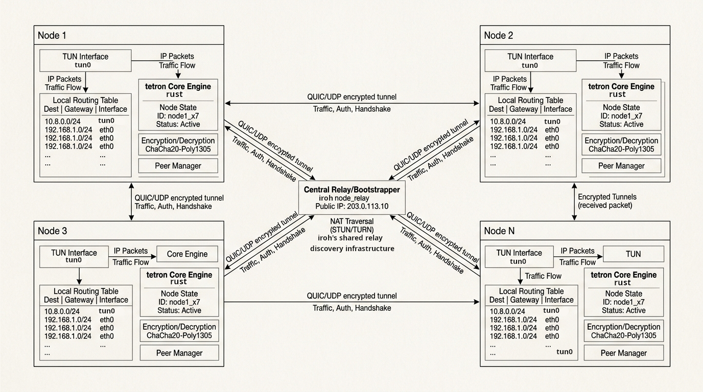
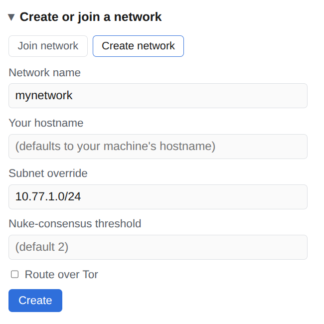
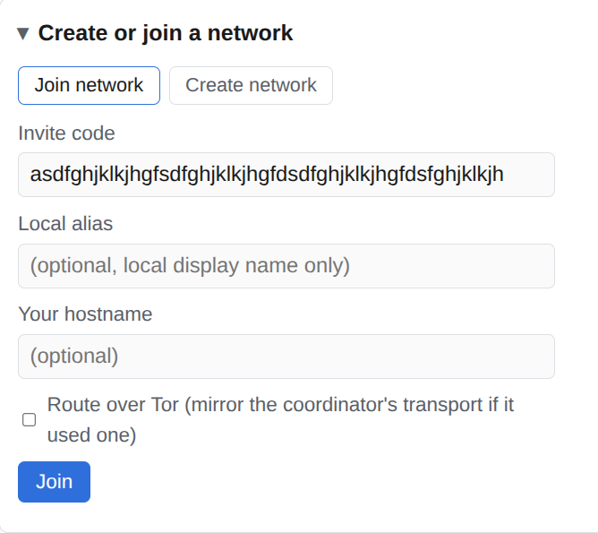
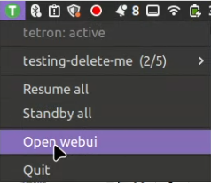

Peer-to-peer mesh VPN experimental
Reach your laptop, home server, NAS and phone as if they sat on the same desk, from anywhere. No port forwarding, no static IPs, no account, nothing exposed to the internet. Invite a machine and it is on your network.
curl -fsSL https://raw.githubusercontent.com/ErikAllanKincaid/tetron/main/contrib/install-tetron-suite.sh | bashLinux (x86_64, aarch64), macOS (Apple silicon, Intel) and Android. The installer sets up the daemon, a web dashboard and a tray client.
Download for Android (.apk)v0.14.3 debug build, pre-release, about 58 MB. Allow installs from your browser to sideload it. Release notes
━━ direct, hole-punched ╌╌ encrypted relay when no direct path exists
Why
No company sits in the middle. Your machines find each other, prove who they are and talk directly.
ssh, a web UI or a file share by mesh IP, from a coffee shop or across NAT. Any TCP or UDP app works.
The only way in is an invite key you mint. Single use by default, with an expiry you choose and revocation before it is used.
Peers hole-punch straight to each other over QUIC. Relays only help with the introduction or when a direct path is impossible.
Every connection is end-to-end encrypted between peer identities. There is no unencrypted mode, and a relay sees only ciphertext.
Each machine derives its own IPv4 and IPv6 address from its key. Same machine, same address, every time.
Each network gets its own TUN device and subnet, like a second network card. Family, work and lab never mix.
The subnet is configurable, so tetron runs next to Tailscale and other overlays that claim the usual ranges.
Route a network over Tor with one flag. Tor and non-Tor peers can share a network.
How it works
Every machine runs the same small daemon. Nothing in the data path belongs to anyone else.
One peer creates a network. It mints an invite key. Another machine joins with it. Both derive their own stable mesh addresses from their keys. They connect directly.
No login server to trust. No data-plane server in the path. Signed, tamper-evident member list. Co-coordinators, so the network survives when one machine is off. No firewall, DNS or ssh server added.

Built on iroh (QUIC, hole-punching, relays) and a DHT for discovery. For the full picture read Anatomy of a Mesh.
Compare
| Port forward + VPN server | Hosted mesh VPN | tetron | |
|---|---|---|---|
| Works behind NAT without router changes | no | yes | yes |
| Needs an account or login provider | no | yes | no |
| Needs a server you run and keep up | yes | no | no |
| Traffic goes through a middle server | yes, yours | direct or relay | direct or relay |
| Admission | keys by hand | login and admin console | invite keys |
| Per-peer and per-port rules | your firewall | built in | host firewall on the TUN |
| Maturity | decades | established | experimental |
tetron has no built-in per-port firewall. Every member of a network reaches every port a peer exposes, so restrict ports with nftables or ufw on the tetron interface.
Tour
Run the suite installer on each machine. It installs the daemon and offers the web dashboard and tray client.
Name it, pick your hostname and get your mesh IP plus the first invite key. Or use the web dashboard form.
Mint more invites any time. Choose an expiry, list what is outstanding, revoke one before it is used.
On the second machine, install and paste the key. The other machines show up in the status.
Ping or ssh the other machine by its mesh IP. Standby and resume switch the tunnel off and on in an instant.
$ curl -fsSL .../install-tetron-suite.sh | bash checking tetron, tetron-webui, tetron-systray ... installed. daemon running.
$ tetron create --network-name mynet --hostname alice
created mynet
address 10.88.0.1 · abcd…1234
next: tetron join <invite-key> single-use invite
tetron resume activate the VPN
$ tetron invite mynet create --expires 24h invite key printed once, send it to the new machine $ tetron invite mynet list $ tetron invite mynet revoke <invite-id>
# on the second machine $ sudo tetron install $ tetron join <invite-key> --hostname bob $ tetron status mynet: alice, bob ...
$ ping 10.88.0.1 $ ssh alice@10.88.0.1 $ tetron standby # tunnel off, peers stay connected $ tetron resume # and back, instantly
sample commands, addresses shown as examples



Better together
tetron-wm is a window manager for the terminal. It shows tetron status in its tray, toggles each network from a popover and opens a terminal into tetron. Everything works without it, and it works without tetron too.
Meet tetron-wmtetron-wm on GitHubcurl -fsSL https://raw.githubusercontent.com/ErikAllanKincaid/tetron/main/contrib/install-tetron-suite.sh | bashDownload for Android (.apk)Debug build, pre-release.